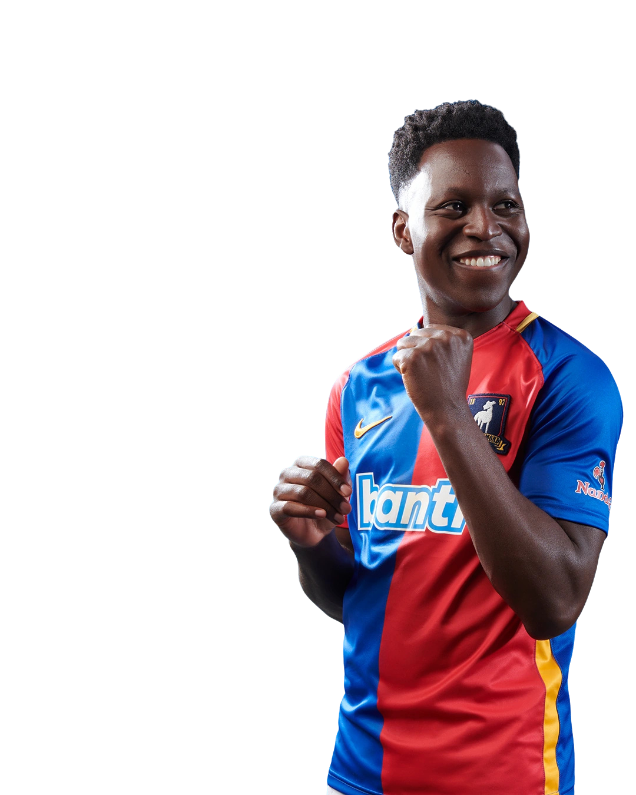

24
← Back to squad
SamObisanya
- Position
- Right Midfielder / Right Winger
- Squad number
- 24
- Nationality
- Nigerian
- Birthplace
- Lagos, Nigeria
Sam Obisanya is a Nigerian international-style wide midfielder and one of AFC Richmond's most technically gifted players. Born in Lagos, Sam arrived at Richmond after playing in the Nigerian football system.
Initially used as a defender, he was later moved into a more advanced role on the right side of midfield, where his technical ability, movement and attacking instincts allowed him to flourish.
Known for his intelligence, professionalism and positive character, Sam has developed into an influential member of the Richmond squad and a respected presence inside the dressing room.